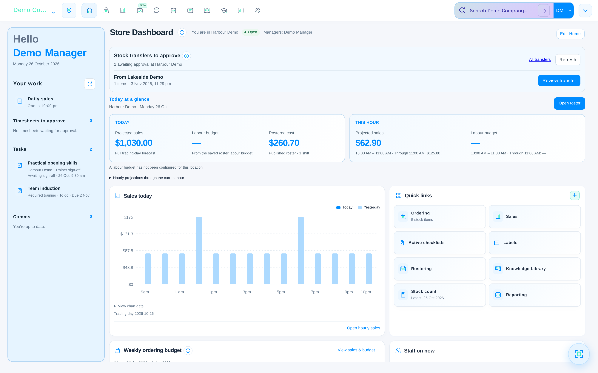
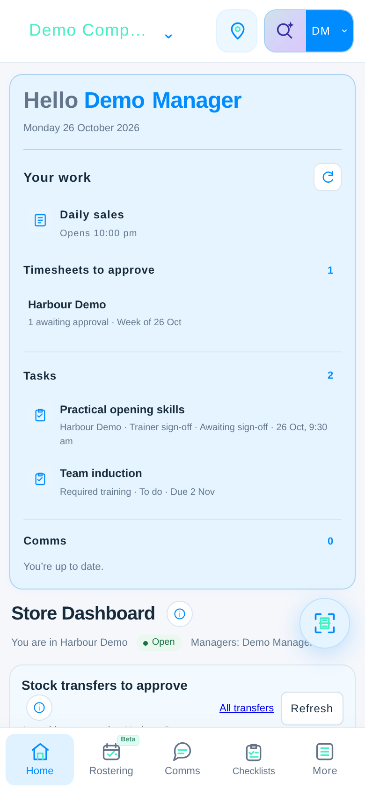
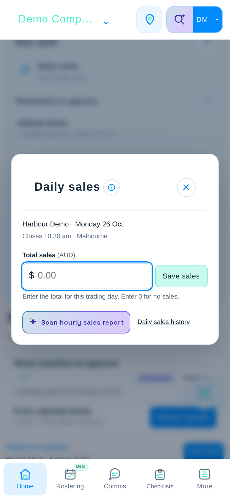

See the whole picture.
Keep sales, labour budgets and location performance in view, without piecing it all together.
Less switching between systems.
More time moving your business forward.

Actual OpStack screens. Example data.
A LITTLE LESS ADMIN. A LOT MORE CONNECTION.
A busy business doesn’t run in separate tabs. OpStack brings your people, stock and daily operations into one connected workspace, so everyone knows what matters and what comes next.
Keep sales, labour budgets and location performance in view, without piecing it all together.
Bring rosters, training, checklists and communication closer to the people doing the work.
Use sales projections, stock targets and ordering tools to plan your next move.
ONE PLATFORM. YOUR DAILY OPERATIONS.
Explore the tools that bring your business together.
A clear home for projected sales, labour budgets, outstanding tasks and the people on shift. Give stores their daily view and Head Office the bigger picture.
OpStack intelligence
Find the answer. Build the training. Make sense of the paperwork. Bring intelligence into the tools your team already uses.
See what’s possibleFind relevant content in your Knowledge Library, from how-to articles to the media inside them.
Create drafts for training, questions, checklists and plans, ready for your team to review.
Scan invoices and sales reports, then review the extracted details before importing.
Your team stays in control. Review generated content and scanned information before using it.
CONNECTED, LOCATION BY LOCATION.
Give store teams the tools for their day, and give Head Office a view across locations. Keep access shaped around each person’s role.
FROM THE OFFICE TO THE FLOOR.
Check the day, keep up with your team and enter sales from a phone. The same connected platform, with a view that fits.
Already using OpStack? Sign in

GOOD QUESTIONS.
Let’s make the next step clearer.
Sales and reporting, rosters and timesheets, stock and ordering, training, checklists, team communication and a shared Knowledge Library. Each user’s access depends on their permissions.
Yes. OpStack supports companies and locations with store settings and permission-based access. Head Office dashboards provide an overview across accessible locations, while stores keep their daily view.
OpStack has responsive phone layouts and paired kiosk-device workflows. The available features follow the user’s permissions and the device’s configuration.
Intelligence supports search, content drafting, training questions, checklist planning and document scanning. Your team reviews the results before using or importing them. Availability depends on your company’s configuration and permissions.
Explore the real app screens above to see the tools and layouts. Use the enquiry section below to tell us about your locations and the workflows you want to bring together.
MAKE ROOM FOR WHAT’S NEXT.
Let’s talk about your locations, your team
and a simpler way to run the everyday.
Demos@opstacktech.com · Opens your email app